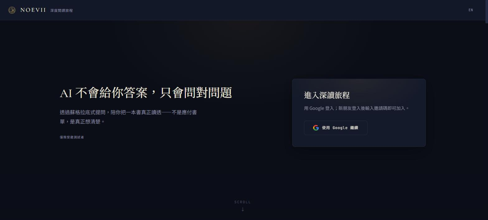
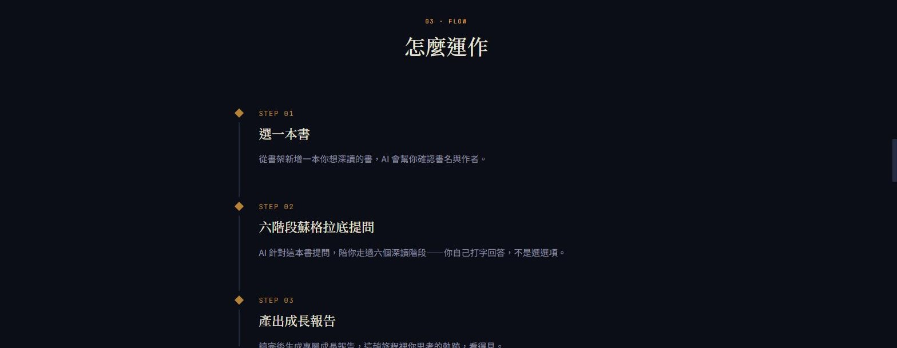
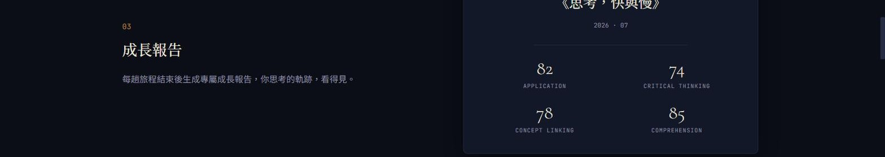
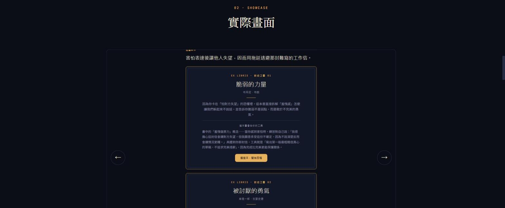

「AI 不會給你答案，只會問對問題。」——這是 NOEVII 打開時的第一句話。
▶ 看網站
真實上線的網站，目前邀請制測試中，首頁公開可以看。
問題
很多人買書、存書單，但真的讀完、讀懂的沒幾本。看完懶人包摘要以為自己懂了，其實只是被動接收，沒有真的想清楚。
怎麼做
NOEVII 用蘇格拉底式提問陪你深讀一本書——選一本書，AI 針對這本書問問題，你自己打字回答，不是選選項。走過六個階段：暖身、閱讀、測驗、教學、報告、推薦，讀完生成一份專屬成長報告，記錄這趟思考的軌跡。



另一個入口：先聊卡住的問題
不知道要讀什麼的人，也可以先跟 AI 聊聊卡住自己的問題，它會從書架推薦對症的書，並附上這本書能給的具體工具。

技術
Next.js、Supabase 打底，深色系設計語言，統一用金色系強調色標記重點。
我的角色
一個人設計、開發，也在自己每天讀書時驗證這套方法——「為什麼不直接看書就好？因為我自己就做不到」，這句話寫在網站上，是真心話。
想做一個有態度、不是為做而做的產品？寫信聊聊 →